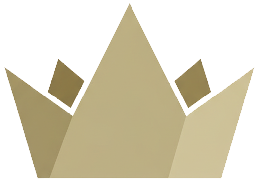
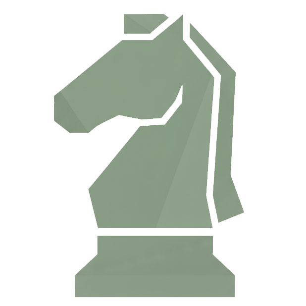
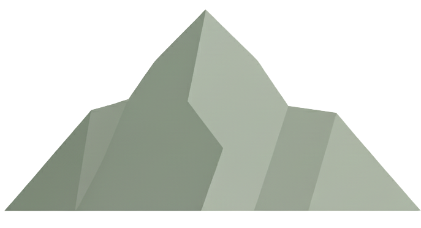
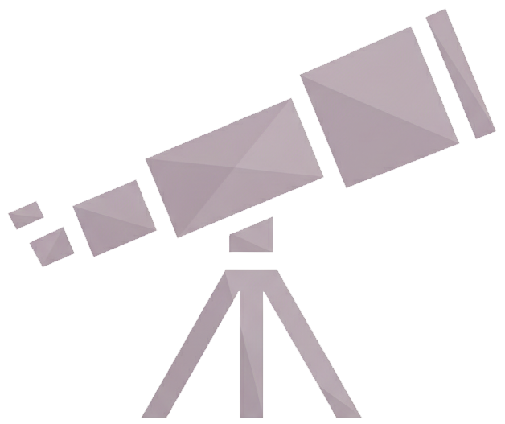
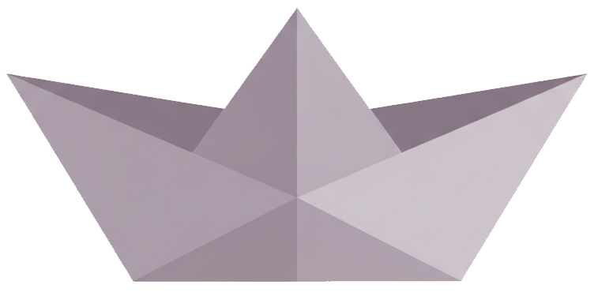

İletişim Testi
IPC Modeli — 8 İletişim Tipi

PA
Yönetici
Ana Özellikler
İletişim Tarzı
Bu kişiler sosyal ortamlarda doğal olarak yönlendirici role bürünür. Sohbetleri yönetmekten, karar almaktan ve ilişkilerde yön belirlemekten rahat hissederler. Flörtte netlik ve ilerleme isterler, belirsizlik onları rahatsız eder. Sağlıklı düzeyde ilham verici ve koruyucudurlar; aşırıya kaçtıklarında kontrol edici veya fazla yönlendirici görünebilirler.
İlişkide
Sıcaklık ve karşılık vermeye çekilirler. Eşit derecede baskın partnerlerle, karşılıklı saygı güçlü olmadıkça zorlanabilirler.

BC
Stratejist
Ana Özellikler
İletişim Tarzı
Kişilerarası dinamiklerde başarı ve etki odaklıdırlar. Flörtte stratejik yaklaşabilir ve hayranlık duyulmasına değer verirler. Saygı gördükleri ve etkili hissettikleri ilişkileri tercih ederler.
İlişkide
Baskı altında yılmayan özgüvenli partnerlerle en iyi uyumu yakalarlar. Aşırıya kaçtıklarında yakınlık odaklı değil, güç odaklı hale gelebilirler.

DE
Bağımsız
Ana Özellikler
İletişim Tarzı
Bu kişiler duygusal mesafe korur ve duygusal etkileşim yerine rasyonel iletişimi tercih ederler. Flörtte seçici ve etkilenmesi zor görünebilirler. Güven yavaş yavaş kurulur ama bir kez oluştuğunda derinden sadık hale gelebilirler.
İlişkide
Entelektüel uyuma ihtiyaç duyarlar. Duygusal açıdan çok hassas partnerler onları sert olarak algılayabilir.

FG
Gözlemci
Ana Özellikler
İletişim Tarzı
Özerklik ve kişisel alana değer verirler. Duygusal ifadeleri dışa vurmaktan çok içsel olarak yaşarlar. İlişkilerde okunması zor görünebilirler ancak genellikle dışarıya yansıttıklarından daha derin bir iç dünya deneyimlerler.
İlişkide
Bağımsızlığına saygı duyan partnerlere ihtiyaç duyarlar. Aşırı ifadeci veya duygusal olarak talepkâr partnerler onları bunaltabilir.

HI
Uyumlu
Ana Özellikler
İletişim Tarzı
Bu kişiler yüzleşmeden kaçınır ve tercihlerini nadiren güçlü bir şekilde öne sürerler. Flörtte ilişkiyi başlatma veya tanımlama konusunda zorlanabilirler. Genellikle partnerlerinin hızına ve tarzına uyum sağlarlar.
İlişkide
Cesaretlendirici ve güçlendirici partnerlerden fayda görürler. Risk: Aşırı baskın dinamiklerde kimliklerini kaybedebilirler.

JK
Destekleyici
Ana Özellikler
İletişim Tarzı
Kendilerini başkalarını destekleyerek tanımlarlar. İlişkilerde derinden ve tutarlı bir şekilde verirler, bazen karşılık görülenden fazlasını. Sevgi dilleri ilgi ve hizmettir.
İlişkide
Takdir gördüklerinde ve duygusal olarak değer verildiklerinde gelişirler. Aşırı baskın veya benmerkezci partnerlerle eşleştiklerinde dengesizliğe karşı savunmasız kalabilirler.

LM
Dost Canlısı
Ana Özellikler
İletişim Tarzı
Bu kişiler uyum ve duygusal yakınlığı öncelikli tutar. Dikkatli dinleyicilerdir ve genellikle partnerlerinin ihtiyaçlarını kendi ihtiyaçlarının önüne koyarlar. Flörtte duygusal güven ortamı oluştururlar ve gerginliği nazikçe çözme konusunda beceriklidirler.
İlişkide
Özgüvenli ama duygusal olarak duyarlı partnerlerle iyi uyum sağlarlar. Risk: Huzuru korumak için kendi ihtiyaçlarını bastırabilirler.
NO
Yıldız
Ana Özellikler
İletişim Tarzı
Sosyal etkileşim ve duygusal paylaşımla beslenen bu kişiler ilişkilere enerji katar ve genellikle planları, sohbetleri ve ortak deneyimleri başlatan taraftır. Bağlantı ve pozitifliğe değer verirler, duygusal mesafeden hoşlanmazlar.
İlişkide
Karşılık ve ortak aktiviteye ihtiyaç duyarlar. Düşük enerjili veya duygusal olarak içe kapanık partnerler onlar için yorucu olabilir.